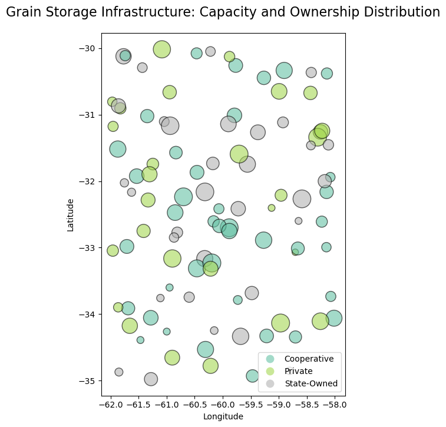

Review Technical Code (Python)
import pandas as pd
import geopandas as gpd
import numpy as np
from shapely.geometry import PointSpatial Analysis of Silo Density and Capacity
Alexis D. Araujo C.
April 3, 2026
In the global agribusiness sector, logistical efficiency is the primary driver of profitability. Beyond mere transportation, the strategic placement of post-harvest infrastructure determines the resilience of the entire supply chain. By leveraging Geographic Information Systems (GIS), we can analyze the spatial distribution of collection centers (silos) to minimize “farm-to-gate” latency and optimize transport overhead from harvest zones.
This project demonstrates an advanced workflow for the visualization and spatial auditing of a regional grain storage network.
A geographic imbalance between high-yield production zones and available storage capacity leads to critical systemic failures:
To address these challenges, this analysis implements three core geospatial techniques:
The solution is built on the Python Data Science ecosystem, ensuring a reproducible and scalable workflow:
| Library | Application |
|---|---|
| Pandas & NumPy | High-performance data manipulation and synthetic attribute generation. |
| GeoPandas | Spatial operations, coordinate reference system (CRS) management, and vector processing. |
| Matplotlib | Production of high-fidelity static cartography and thematic layers. |
| Folium / Leaflet | Deployment of web-based interactive dashboards for stakeholder engagement. |
To simulate a realistic regional grain storage network, we generate a synthetic dataset representing 100 strategic collection points. This approach allows us to model a variety of management structures and volumetric capacities within a defined agricultural frontier.
We initialize the dataset with random spatial coordinates (localized within the Southern Cone, e.g., Argentina) and assign multivariate attributes to each infrastructure point.
# Configuration: Define the number of silos for the regional model
n_silos = 100
# Attribute Generation:
# - Capacity: Volumetric storage in Metric Tons (MT)
# - Management Type: Operational model classification
# - Spatial Coordinates: Lat/Lon within the target agricultural zone
data = {
'id': range(n_silos),
'capacity_mt': np.random.randint(5000, 50000, n_silos),
'management_type': np.random.choice(['Private', 'Cooperative', 'State-Owned'], n_silos),
'lat': np.random.uniform(-35, -30, n_silos),
'lon': np.random.uniform(-62, -58, n_silos)
}
# DataFrame Construction
df = pd.DataFrame(data)
# Vectorization: Creating Point geometries from coordinates
geometry = [Point(xy) for xy in zip(df.lon, df.lat)]
# GeoDataFrame Initialization: Set initial CRS to WGS84 (Geographic)
silos_gdf = gpd.GeoDataFrame(df, geometry=geometry, crs="EPSG:4326")
# Preview the first 5 records of the spatial collection
silos_gdf.head(5)| id | capacity_mt | management_type | lat | lon | geometry | |
|---|---|---|---|---|---|---|
| 0 | 0 | 16037 | State-Owned | -30.365582 | -58.419992 | POINT (-58.41999 -30.36558) |
| 1 | 1 | 32329 | Cooperative | -34.056057 | -61.281620 | POINT (-61.28162 -34.05606) |
| 2 | 2 | 16063 | State-Owned | -33.746383 | -60.596644 | POINT (-60.59664 -33.74638) |
| 3 | 3 | 35461 | Private | -34.176803 | -61.656077 | POINT (-61.65608 -34.1768) |
| 4 | 4 | 34549 | Private | -34.779757 | -60.214923 | POINT (-60.21492 -34.77976) |
Standard geographic coordinates (WGS84) are ideal for global positioning but unsuitable for precise distance and area calculations. To enable metric-based spatial analysis, we re-project the dataset to a Projected Coordinate System (UTM Zone 20S).
To transform raw geographic data into actionable intelligence, we apply Multivariate Mapping techniques. This allows us to visualize two distinct variables simultaneously:
Volumetric Capacity (Quantitative): Represented through Proportional Symbols (Marker Size). Larger points indicate higher storage potential.
Management Model (Qualitative): Represented through Color Categorization (Hue). This differentiates the operational nature of each facility.
import matplotlib.pyplot as plt
# Initialize the figure with a professional aspect ratio
fig, ax = plt.subplots(figsize=(12, 8))
# Execute Multivariate Symbolization
silos_gdf.plot(
ax=ax,
# Variable 1: Proportional scaling (Capacity in Metric Tons)
# Dividing by 100 normalizes the point size for optimal map legibility
markersize=silos_gdf['capacity_mt'] / 100,
# Variable 2: Categorical classification (Management Model)
column='management_type',
legend=True,
alpha=0.6,
edgecolor='black',
cmap='Set2'
)
# Apply formal cartographic metadata
ax.set_title("Grain Storage Infrastructure: Capacity and Ownership Distribution",
fontsize=16, pad=20)
ax.set_xlabel("Longitude")
ax.set_ylabel("Latitude")
plt.show()
To finalize the analysis, we implement a Kernel Density Estimation (KDE) heatmap layered with an interactive vector layer. This dual-visualization approach allows stakeholders to identify regional infrastructure clusters (Heatmap) while maintaining access to granular, site-specific data (Interactive Markers).
import folium
from folium.plugins import HeatMap
from branca.element import Template, MacroElement
# 1. Initialize Base Map (CartoDB Positron for high-contrast visibility)
m = folium.Map(location=[-32.5, -60], zoom_start=7, tiles='CartoDB Positron')
# 2. Heatmap Layer (Weighted by Storage Capacity)
heat_data = [[row.geometry.y, row.geometry.x, row['capacity_mt']] for index, row in silos_gdf.iterrows()]
HeatMap(heat_data, radius=20, blur=15, name="Density Heatmap (Capacity)").add_to(m)
# 3. Color Dictionary (Strategic Contrast Palette)
color_hex = {'Private': '#000000', 'Cooperative': '#FFFFFF', 'State-Owned': '#FB5607'}
# 4. Interactive Layer Creation (Grouped by Management Type)
management_types = silos_gdf['management_type'].unique()
silo_groups = {t: folium.FeatureGroup(name=f"Silos: {t}").add_to(m) for t in management_types}
for index, row in silos_gdf.iterrows():
color_silo = color_hex.get(row['management_type'], '#000000')
# HTML template for Interactive Popups
html_popup = f"""
<div style='font-family: Arial; font-size: 12px; width: 160px;'>
<h4 style='margin: 0 0 10px 0; color: {color_silo if color_silo != "#FFFFFF" else "#333"};'>Facility Specs</h4>
<b>ID:</b> {row['id']}<br>
<b>Type:</b> {row['management_type']}<br>
<b>Capacity:</b> {row['capacity_mt']:,} MT<br>
<hr style='margin: 8px 0;'>
<small>Coord: {row.geometry.y:.4f}, {row.geometry.x:.4f}</small>
</div>
"""
folium.CircleMarker(
location=[row.geometry.y, row.geometry.x],
radius=6,
color='black',
weight=1,
fill=True,
fill_color=color_silo,
fill_opacity=0.9,
popup=folium.Popup(html_popup, max_width=200),
tooltip=f"Silo {row['id']} - Click for details"
).add_to(silo_groups[row['management_type']])
# 5. Dashboard Header
header_html = '<h3 align="center" style="font-size:18px; margin-top:10px; font-family: Arial;"><b>Agro-Industrial Storage Infrastructure Analysis</b></h3>'
m.get_root().html.add_child(folium.Element(header_html))
# 6. LEGEND WITH VISIBILITY CONTROL (JavaScript Logic)
legend_layer = folium.FeatureGroup(name="Toggle Legend Overlay", show=True).add_to(m)
legend_template = f"""
{{% macro html(this, kwargs) %}}
<div id='maplegend' class='maplegend'
style='position: fixed; z-index:9999; border:2px solid grey; background-color:rgba(255, 255, 255, 0.9);
border-radius:6px; padding: 12px; font-size:12px; right: 15px; bottom: 15px; font-family: Arial;
box-shadow: 2px 2px 5px rgba(0,0,0,0.2); display: block;'>
<div style='font-weight: bold; margin-bottom: 8px;'>Management Model</div>
<ul style='list-style: none; padding: 0; margin: 0;'>
<li style='margin-bottom: 5px;'><span style='background:{color_hex['Private']}; float:left; height:12px; width:12px; margin-right:8px; border-radius:50%; border:1px solid #333;'></span>Private</li>
<li style='margin-bottom: 5px;'><span style='background:{color_hex['Cooperative']}; float:left; height:12px; width:12px; margin-right:8px; border-radius:50%; border:1px solid #333;'></span>Cooperative</li>
<li style='margin-bottom: 10px;'><span style='background:{color_hex['State-Owned']}; float:left; height:12px; width:12px; margin-right:8px; border-radius:50%; border:1px solid #333;'></span>State-Owned</li>
</ul>
<div style='font-weight: bold; margin-bottom: 5px;'>Storage Density</div>
<div style='background: linear-gradient(to right, blue, lime, orange, red); height: 10px; width: 80px; border: 1px solid #999; margin-bottom: 8px;'></div>
<div style='font-size: 10px; color: #555; border-top: 1px solid #ccc; padding-top: 5px;'>
Author: @alexisdaraujoc<br>CRS: EPSG:32720
</div>
</div>
<script>
function toggleLegend() {{
var legend = document.getElementById('maplegend');
var layerName = "Toggle Legend Overlay";
{m.get_name()}.on('overlayadd', function(eventLayer) {{
if (eventLayer.name === layerName) {{
legend.style.display = 'block';
}}
}});
{m.get_name()}.on('overlayremove', function(eventLayer) {{
if (eventLayer.name === layerName) {{
legend.style.display = 'none';
}}
}});
}}
setTimeout(toggleLegend, 500);
</script>
{{% endmacro %}}
"""
macro = MacroElement()
macro._template = Template(legend_template)
legend_layer.add_child(macro)
# 7. Final Layer Control Configuration
folium.LayerControl(collapsed=False).add_to(m)
# Save output for deployment
m.save("day1_points_silos.html")
# Display map in notebook
mDynamic Information Layering: The implementation of a toggleable legend via custom JavaScript injection solves a core limitation in standard Folium builds. This allows stakeholders to minimize cognitive load by clearing the canvas for unobstructed visual analysis while maintaining access to technical metadata (CRS: EPSG:32720) on demand.
Visual Hierarchy: Utilizing high-contrast stroke borders (weight=1) and a custom hexadecimal palette ensures that individual infrastructure points remain legible even within high-intensity heatmap zones, effectively neutralizing visual noise.
Macro-to-Micro Workflow: By layering Kernel Density Estimation (KDE) with discrete vector markers, the dashboard enables a seamless transition from Regional Cluster Analysis (identifying saturation zones) to Granular Asset Auditing (querying specific silo capacity and management models) within a single unified environment.
Infrastructure Gap Detection: This tool serves as a primary Decision-Support System (DSS) for regional planning. It allows engineers to identify “blind spots”—agricultural frontiers where current storage capacity fails to meet projected harvest demand.
Logistical Optimization: The spatial distribution analysis directly informs the reduction of “farm-to-gate” distances, which is essential for lowering the carbon footprint and operational costs of the grain supply chain.